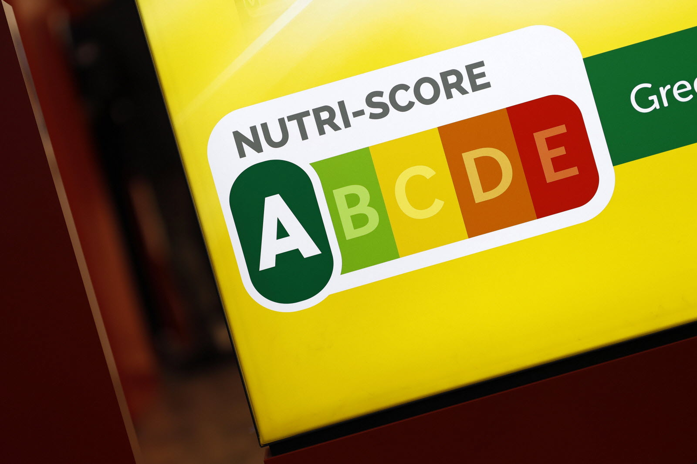

Nutri-Score Prediction and Classification for Food Products
üîç Project Overview.
This project focused on developing a data-driven system to classify food products based on their nutritional quality using the Nutri-Score labeling system. The Nutri-Score, adopted in several European countries, helps consumers make healthier food choices by providing an easy-to-understand score (from A to E) based on a product’s nutritional content.

üõ†Ô∏è Methodology
To create a robust classification model, the following steps were taken:
• Data Collection: Nutritional data was sourced from Open Food Facts, a free and open database of food products from around the world. Thousands of product entries were collected across multiple categories (snacks, beverages, meals, etc.).
Data Preprocessing:
• Cleaned missing and inconsistent values.
• Standardized units (e.g., grams, kilocalories).
• Filtered products with sufficient and relevant nutritional information.
Feature Engineering:
• Implemented multiple classification models including Logistic Regression, Random Forest, and Gradient Boosting Classifier using scikit-learn.
• Used cross-validation and grid search to tune hyperparameters and prevent overfitting.
Evaluation:
• Assessed model performance using accuracy, precision, recall, and confusion matrix.
• Achieved strong classification performance, particularly with the Gradient Boosting model, which provided the best balance across all score categories (A to E).
Visualization:
• Used Matplotlib and Seaborn to generate insightful visualizations showing the distribution of nutrients per Nutri-Score and the classification performance of each model.
Key Insights
• Most products rated Nutri-Score C represented an average balance of nutrients, while scores A and E reflected extremes in health quality.
• Sugars and saturated fats were strong predictors of lower Nutri-Scores, while fibers and proteins influenced higher scores.
• Machine learning models can effectively replicate public health labeling systems and be used to audit, compare, or recommend food products at scale.